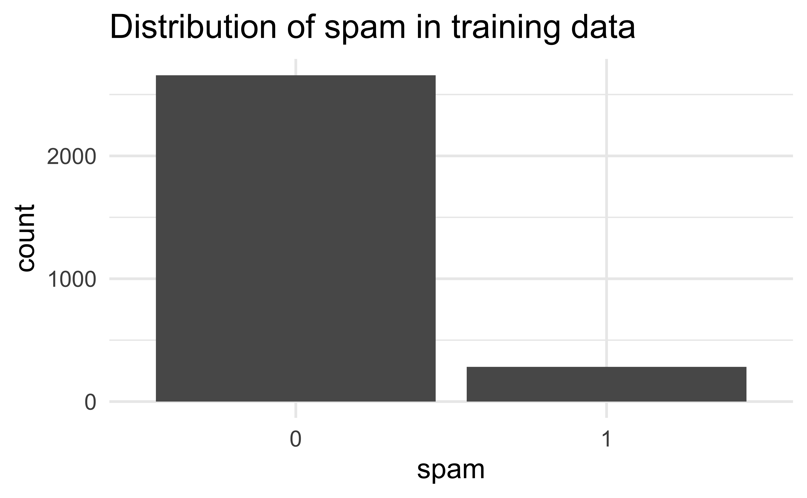
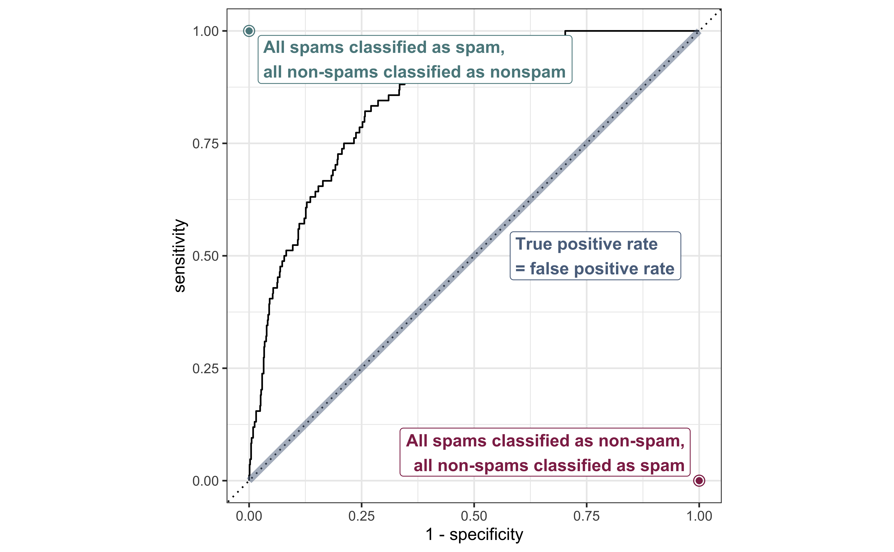
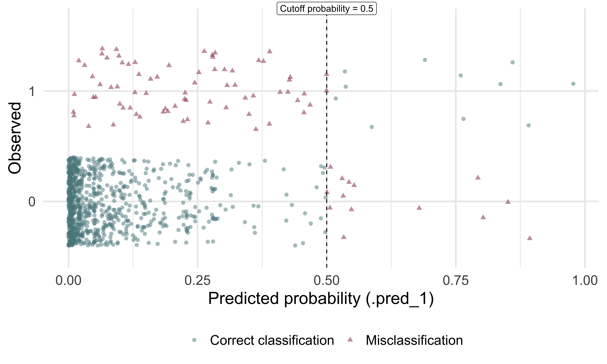
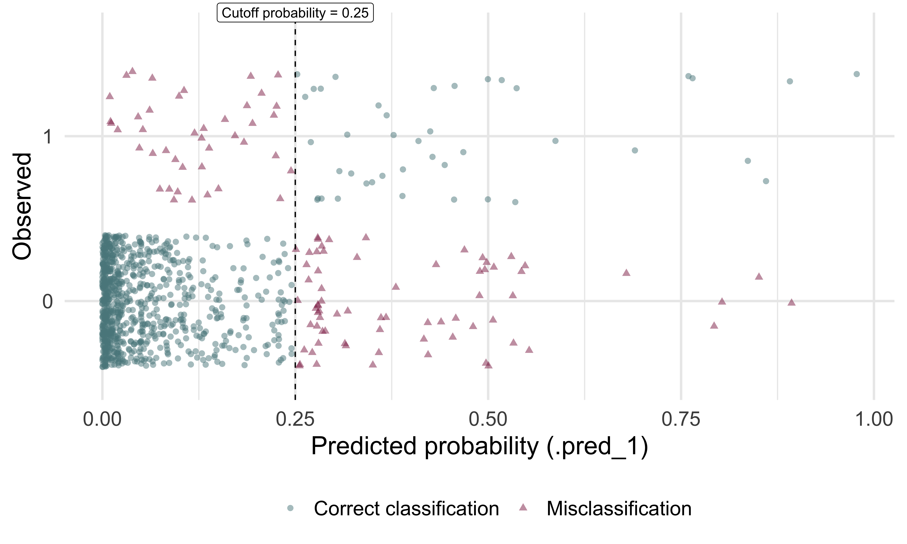
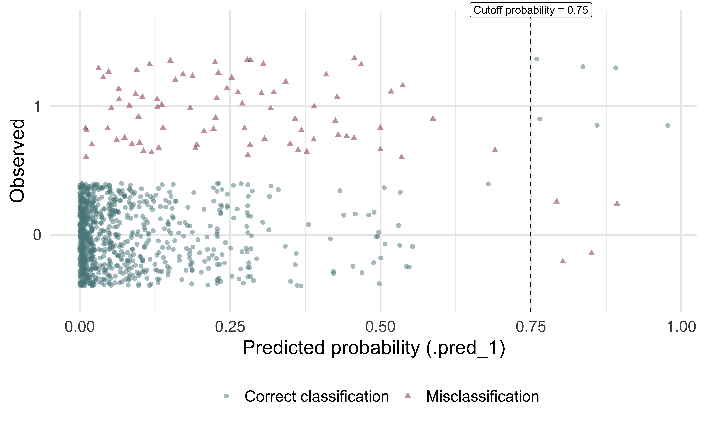

LR: Prediction / classification
STA 210 - Spring 2022
Welcome
Topics
- Bulding predictive logistic regression models
- Sensitivity and specificity
- Making classification decisions
Computational setup
Data
openintro::email
These data represent incoming emails for the first three months of 2012 for an email account.
- Outcome:
spam- Indicator for whether the email was spam. - Predictors:
spam, `to_multiple,from,cc,sent_email,time,image,attach,dollar,winner,inherit,viagra,password,num_char,line_breaks,format,re_subj,exclaim_subj,urgent_subj,exclaim_mess,number.
See here for more detailed information on the variables.
Training and testing split
# Fix random numbers by setting the seed
# Enables analysis to be reproducible when random numbers are used
set.seed(1116)
# Put 75% of the data into the training set
email_split <- initial_split(email)
# Create data frames for the two sets
email_train <- training(email_split)
email_test <- testing(email_split)Exploratory analysis
The sample is unbalanced with respect to spam.

Reminder: Modeling workflow
Create a recipe for feature engineering steps to be applied to the training data
Fit the model to the training data after these steps have been applied
Using the model estimates from the training data, predict outcomes for the test data
Evaluate the performance of the model on the test data
Start with a recipe
Initiate a recipe
# A tibble: 21 × 4
variable type role source
<chr> <chr> <chr> <chr>
1 to_multiple nominal predictor original
2 from nominal predictor original
3 cc numeric predictor original
4 sent_email nominal predictor original
5 time date predictor original
6 image numeric predictor original
7 attach numeric predictor original
8 dollar numeric predictor original
9 winner nominal predictor original
10 inherit numeric predictor original
11 viagra numeric predictor original
12 password numeric predictor original
13 num_char numeric predictor original
14 line_breaks numeric predictor original
15 format nominal predictor original
16 re_subj nominal predictor original
17 exclaim_subj numeric predictor original
18 urgent_subj nominal predictor original
19 exclaim_mess numeric predictor original
20 number nominal predictor original
21 spam nominal outcome originalRemove certain variables
Recipe
Inputs:
role #variables
outcome 1
predictor 20
Operations:
Delete terms from, sent_emailFeature engineer date
Recipe
Inputs:
role #variables
outcome 1
predictor 20
Operations:
Delete terms from, sent_email
Date features from time
Delete terms timeDiscretize numeric variables
Recipe
Inputs:
role #variables
outcome 1
predictor 20
Operations:
Delete terms from, sent_email
Date features from time
Delete terms time
Cut numeric for cc, attach, dollarCreate dummy variables
Recipe
Inputs:
role #variables
outcome 1
predictor 20
Operations:
Delete terms from, sent_email
Date features from time
Delete terms time
Cut numeric for cc, attach, dollar
Dummy variables from all_nominal(), -all_outcomes()Remove zero variance variables
Variables that contain only a single value
Recipe
Inputs:
role #variables
outcome 1
predictor 20
Operations:
Delete terms from, sent_email
Date features from time
Delete terms time
Cut numeric for cc, attach, dollar
Dummy variables from all_nominal(), -all_outcomes()
Zero variance filter on all_predictors()All in one place
Build a workflow
Define model
Define workflow
Remember: Workflows bring together models and recipes so that they can be easily applied to both the training and test data.
══ Workflow ════════════════════════════════════════════════════════════════════
Preprocessor: Recipe
Model: logistic_reg()
── Preprocessor ────────────────────────────────────────────────────────────────
6 Recipe Steps
• step_rm()
• step_date()
• step_rm()
• step_cut()
• step_dummy()
• step_zv()
── Model ───────────────────────────────────────────────────────────────────────
Logistic Regression Model Specification (classification)
Computational engine: glm Fit model to training data
# A tibble: 27 × 5
term estimate std.error statistic p.value
<chr> <dbl> <dbl> <dbl> <dbl>
1 (Intercept) -0.867 0.259 -3.34 8.32e- 4
2 image -1.72 0.941 -1.83 6.78e- 2
3 inherit 0.359 0.179 2.01 4.48e- 2
4 viagra 1.90 40.6 0.0469 9.63e- 1
5 password -0.951 0.405 -2.35 1.88e- 2
6 num_char 0.0475 0.0246 1.93 5.35e- 2
7 line_breaks -0.00499 0.00140 -3.55 3.78e- 4
8 exclaim_subj -0.196 0.287 -0.682 4.95e- 1
9 exclaim_mess 0.00845 0.00188 4.49 6.99e- 6
10 to_multiple_X1 -2.65 0.370 -7.17 7.78e-13
11 cc_X.1.68. -0.350 0.518 -0.676 4.99e- 1
12 attach_X.1.21. 2.17 0.399 5.44 5.19e- 8
13 dollar_X.1.64. 0.122 0.230 0.529 5.97e- 1
14 winner_yes 2.25 0.438 5.14 2.79e- 7
15 format_X1 -0.945 0.165 -5.71 1.10e- 8
16 re_subj_X1 -2.96 0.463 -6.39 1.61e-10
17 urgent_subj_X1 4.77 1.26 3.79 1.51e- 4
18 number_small -0.928 0.173 -5.36 8.48e- 8
19 number_big -0.190 0.256 -0.740 4.59e- 1
20 time_dow_Mon 0.116 0.307 0.379 7.05e- 1
21 time_dow_Tue 0.394 0.279 1.41 1.58e- 1
22 time_dow_Wed -0.175 0.285 -0.613 5.40e- 1
23 time_dow_Thu 0.134 0.288 0.467 6.41e- 1
24 time_dow_Fri 0.101 0.288 0.352 7.25e- 1
25 time_dow_Sat 0.308 0.310 0.995 3.20e- 1
26 time_month_Feb 0.767 0.187 4.11 3.99e- 5
27 time_month_Mar 0.524 0.186 2.82 4.81e- 3Make predictions
Make predictions for test data
# A tibble: 981 × 23
.pred_0 .pred_1 spam to_multiple from cc sent_email time
<dbl> <dbl> <fct> <fct> <fct> <int> <fct> <dttm>
1 0.962 0.0376 0 0 1 0 0 2012-01-01 02:03:59
2 0.995 0.00461 0 1 1 0 1 2012-01-01 12:55:06
3 0.999 0.00127 0 0 1 1 1 2012-01-01 14:38:32
4 0.997 0.00281 0 0 1 2 0 2012-01-01 18:32:53
5 0.987 0.0128 0 0 1 0 0 2012-01-02 00:42:16
6 0.999 0.000886 0 0 1 1 0 2012-01-02 10:12:51
7 0.994 0.00633 0 0 1 4 0 2012-01-02 11:45:36
8 0.851 0.149 0 0 1 0 0 2012-01-02 16:55:03
9 0.968 0.0318 0 0 1 0 0 2012-01-02 20:07:17
10 0.997 0.00277 0 0 1 0 1 2012-01-02 23:34:50
# … with 971 more rows, and 15 more variables: image <dbl>, attach <dbl>,
# dollar <dbl>, winner <fct>, inherit <dbl>, viagra <dbl>, password <dbl>,
# num_char <dbl>, line_breaks <int>, format <fct>, re_subj <fct>,
# exclaim_subj <dbl>, urgent_subj <fct>, exclaim_mess <dbl>, number <fct>A closer look at predictions
Which of the following 10 emails will be misclassified?
# A tibble: 981 × 3
.pred_0 .pred_1 spam
<dbl> <dbl> <fct>
1 0.0223 0.978 1
2 0.107 0.893 0
3 0.109 0.891 1
4 0.140 0.860 1
5 0.149 0.851 0
6 0.163 0.837 1
7 0.197 0.803 0
8 0.207 0.793 0
9 0.235 0.765 1
10 0.240 0.760 1
# … with 971 more rowsSensitivity and specificity
False positive and negative
| Email is spam | Email is not spam | |
|---|---|---|
| Email classified as spam | True positive | False positive (Type 1 error) |
| Email classified as not spam | False negative (Type 2 error) | True negative |
False negative rate = P(classified as not spam | Email spam) = FN / (TP + FN)
False positive rate = P(classified as spam | Email not spam) = FP / (FP + TN)
Sensitivity and specificity
| Email is spam | Email is not spam | |
|---|---|---|
| Email classified as spam | True positive | False positive (Type 1 error) |
| Email classified as not spam | False negative (Type 2 error) | True negative |
- Sensitivity = P(classified as spam | Email spam) = TP / (TP + FN)
- Sensitivity = 1 − False negative rate
- Specificity = P(classified as not spam | Email not spam) = TN / (FP + TN)
- Specificity = 1 − False positive rate
If you were designing a spam filter, would you want sensitivity and specificity to be high or low? What are the trade-offs associated with each decision?
Evaluate the performance
Receiver operating characteristic (ROC) curve+ which plot true positive rate vs. false positive rate (1 - specificity).
ROC curve, under the hood
# A tibble: 981 × 3
.threshold specificity sensitivity
<dbl> <dbl> <dbl>
1 -Inf 0 1
2 1.31e-13 0 1
3 2.63e- 8 0.00111 1
4 5.75e- 6 0.00223 1
5 1.36e- 5 0.00334 1
6 2.33e- 5 0.00446 1
7 2.74e- 5 0.00557 1
8 3.28e- 5 0.00669 1
9 4.59e- 5 0.00780 1
10 4.78e- 5 0.00892 1
# … with 971 more rowsROC curve

Evaluate the performance
Make decisions
Cutoff probability: 0.5
Suppose we decide to label an email as spam if the model predicts the probability of spam to be more than 0.5.
| Email is not spam | Email is spam | |
|---|---|---|
| Email classified as not spam | 883 | 73 |
| Email classified as spam | 14 | 11 |
cutoff_prob <- 0.5
email_pred %>%
mutate(
spam_pred = as_factor(if_else(.pred_1 >= cutoff_prob, 1, 0)),
spam = if_else(spam == 1, "Email is spam", "Email is not spam"),
spam_pred = if_else(spam_pred == 1, "Email classified as spam", "Email classified as not spam")
) %>%
count(spam_pred, spam) %>%
pivot_wider(names_from = spam, values_from = n) %>%
kable(col.names = c("", "Email is not spam", "Email is spam"))Confusion matrix
Cross-tabulation of observed and predicted classes:
Classification

Cutoff probability: 0.25
Suppose we decide to label an email as spam if the model predicts the probability of spam to be more than 0.25.
| Email is not spam | Email is spam | |
|---|---|---|
| Email classified as not spam | 826 | 42 |
| Email classified as spam | 71 | 42 |
cutoff_prob <- 0.25
email_pred %>%
mutate(
spam_pred = as_factor(if_else(.pred_1 >= cutoff_prob, 1, 0)),
spam = if_else(spam == 1, "Email is spam", "Email is not spam"),
spam_pred = if_else(spam_pred == 1, "Email classified as spam", "Email classified as not spam")
) %>%
count(spam_pred, spam) %>%
pivot_wider(names_from = spam, values_from = n) %>%
kable(col.names = c("", "Email is not spam", "Email is spam"))Classification

Cutoff probability: 0.75
Suppose we decide to label an email as spam if the model predicts the probability of spam to be more than 0.75.
| Email is not spam | Email is spam | |
|---|---|---|
| Email classified as not spam | 893 | 78 |
| Email classified as spam | 4 | 6 |
cutoff_prob <- 0.75
email_pred %>%
mutate(
spam_pred = as_factor(if_else(.pred_1 >= cutoff_prob, 1, 0)),
spam = if_else(spam == 1, "Email is spam", "Email is not spam"),
spam_pred = if_else(spam_pred == 1, "Email classified as spam", "Email classified as not spam")
) %>%
count(spam_pred, spam) %>%
pivot_wider(names_from = spam, values_from = n) %>%
kable(col.names = c("", "Email is not spam", "Email is spam"))Classification
